تصميم مقترح قبل التنفيذ · بناءً على بياناتك الفعلية (1765 كتاباً · 1734 بلا تاريخ تسليم)
مؤشرات + تنبيه التسليم غير المتتبَّع
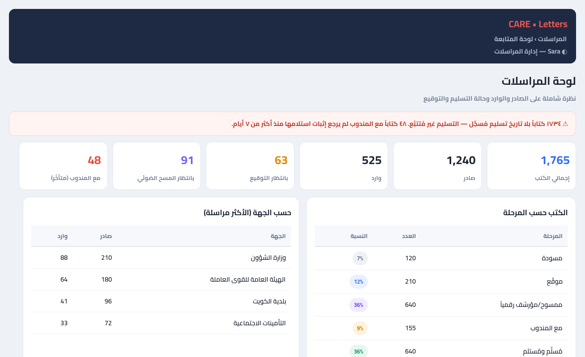
مسودة → توقيع → مسح → مندوب → مُسلَّم → مُستلَم
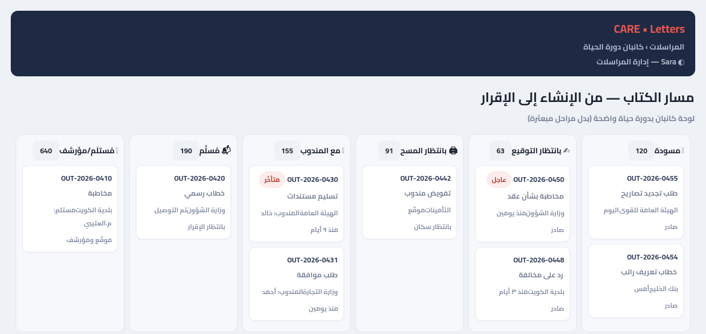
تتبّع كل كتاب حتى إثبات الاستلام + تنبيه المتأخرات
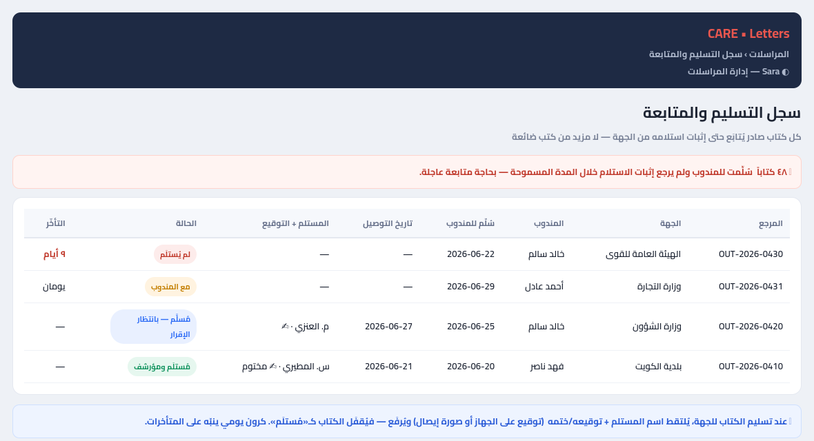
أزرار سير العمل + تبويب سجل التسليم
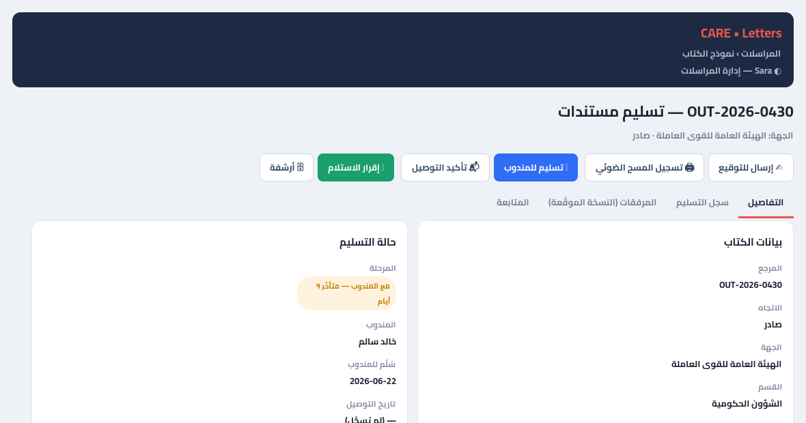
خطوات SIGN→SCAN→UPLOAD + ليبل بمرجع/تاريخ/QR
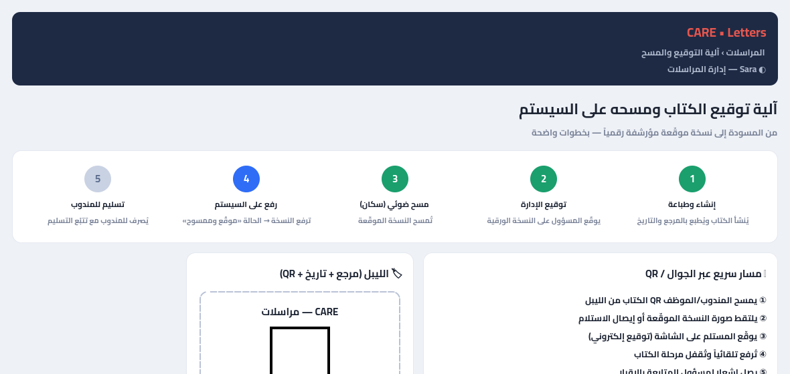
المشاكل المرصودة + أزرار إصلاح
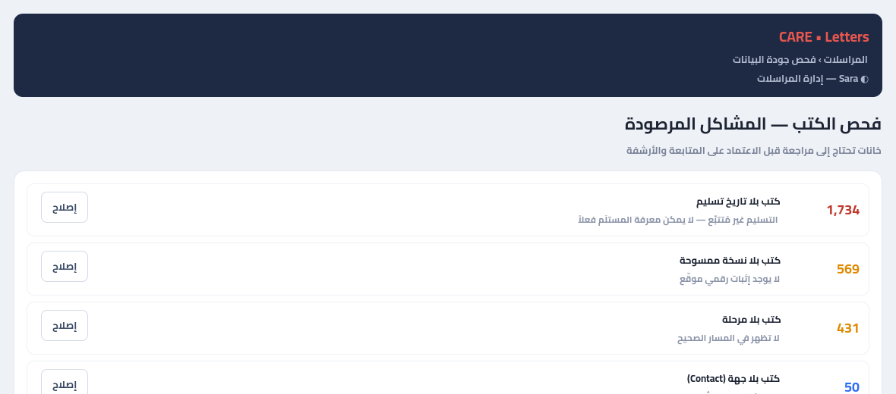
إنشاء بنقرة + دمج بيانات + طباعة بترويسة
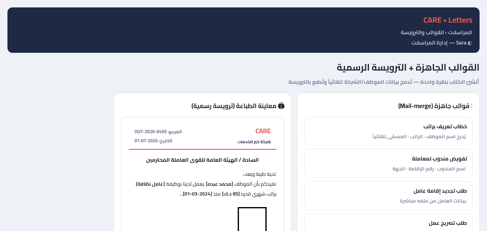
ربط الرد بأصله + مهلة الرد للجهة
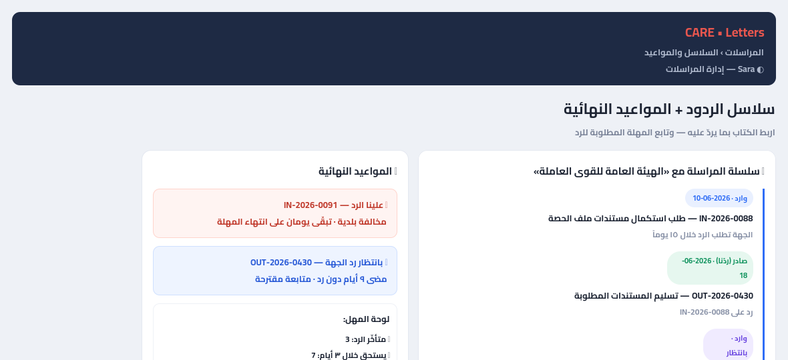
مساءلة: سرعة التوصيل ونسبة الإقرار والمتأخرات
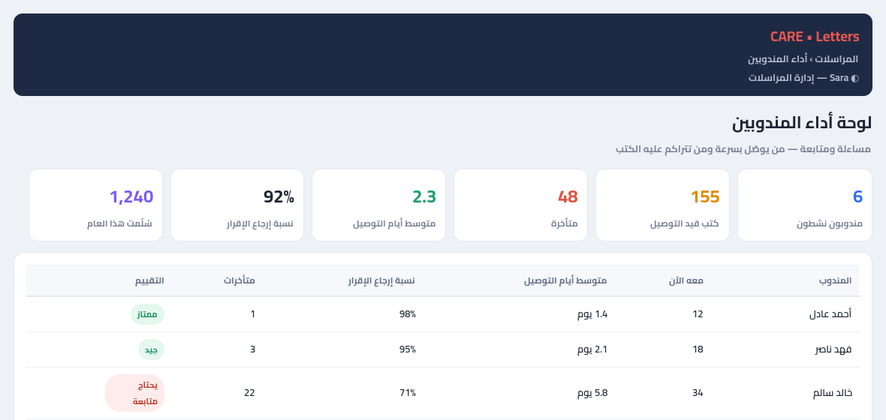
بحث داخل الكتب الممسوحة + مكان النسخة الورقية
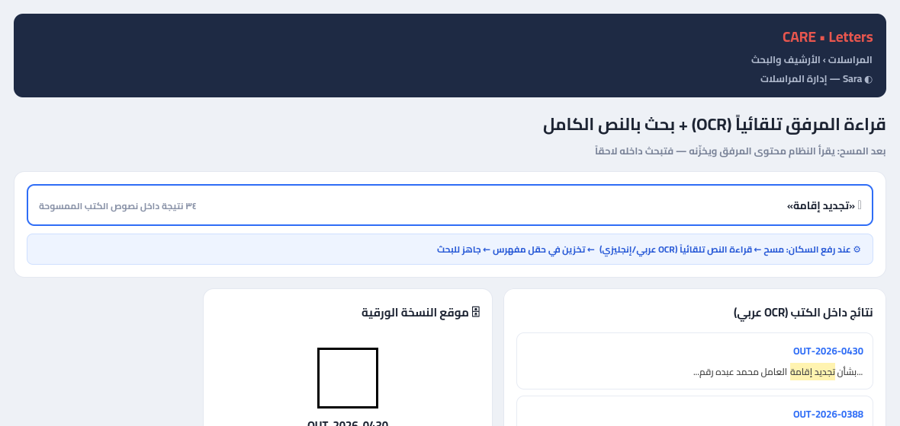
مرجع منظّم + ربط بالموظف/المناقصة + تتبّع الرسوم
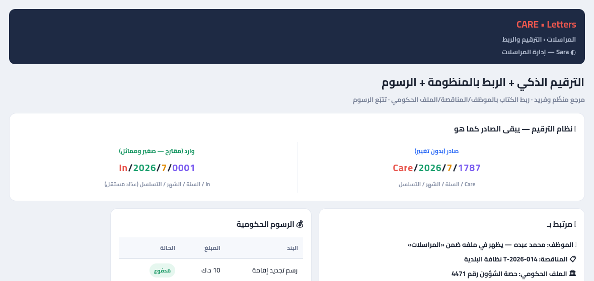
إشعار طالب الكتاب + تذكير المندوب + مصفوفة كاملة
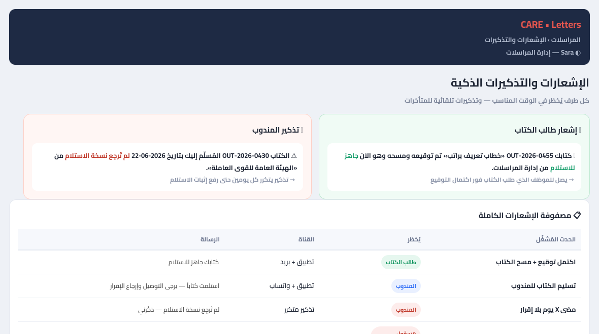
أدمن كامل + كل مستخدم يرى كتبه فقط + قواعد الخصوصية
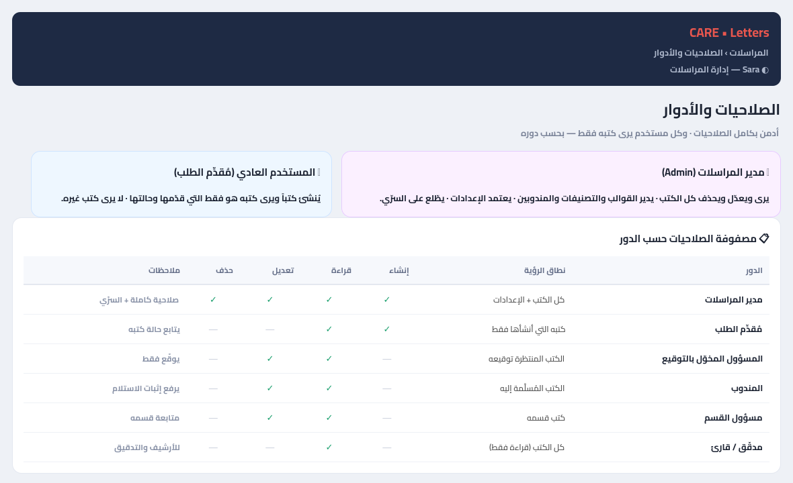